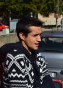

Arbitrii
Laura Bretea
Primul meu meci de debate a fost acum treisprezece ani. Moţiunea era "Generaţia Pro este Generaţia Contra?". Pentru că dezbaterile au contribuit foarte mult la dezvoltarea mea şi la alegerea unei profesii, am continuat să mă interesez de acţiunile ARDOR şi să dau o mână de ajutor. Antr-un debate apreciez un discurs clar, organizat şi bazat pe informaţii verificate şi pertinente. Când nu sunt arbitru de debate lucrez în domeniul relaţiilor internaţionale şi asistenţei electorale în ţări în curs de dezvoltare precum Senegal, Tunisia, Coastă de Fildeş, Ecuador, Georgia şi altele.
Ioana Cionea
Am făcut cunoștință cu programul de dezbateri în urmă cu peste 17 ani. A fost o întâlnire neașteptată ce mi-a influențat cursul vieții și decizia de a urma o carieră academică. Am jucat dezbateri, am antrenat echipe de a căror rezultate sunt mândră și am coordonat o droaie de activități, de la tabere regionale la forumuri internaționale. Debate-ul mi-a rămas mereu aproape de suflet datorită oamenilor formidabili pe care i-am cunoscut prin intermediul său. În prezent sunt profesor universitar la Universitatea din Oklahoma, SUA unde predau cursuri în comunicare interculturală și internațională și fac cercetare, pe ce altceva decât pe argumentare interculturală. Mă bucur să mă pot alătura vouă pentru C2O.
Ioana Covei
Când am început să fac dezbateri şi oratorie (public speaking), în clasa a 9-a, nu m-am gândit că ar fi genul de decizie care să îmi afecteze într-o mare masură parcursul în viaţă (cum nu pare nici participarea la o competiţie online, dacă stăm să ne gândim). Acum că au trecut 5 ani de când fac parte din asociaţie, pot să spun că abilităţile pe care le-am dobândit îi sunt de mare ajutor oricui vrea să exceleze, indiferent de domeniu. Sunt studentă în anul II la Facultatea de Litere din cadrul Universităţii Bucureşti şi - ca să vedeţi că nu se prea scapă de febra dezbaterilor - Director Executiv al ARDOR Muntenia. În momentul de faţă predau Oratorie elevilor de liceu doritori la British Council Bucureşti. Îmi place mult conceptul Closer to Oxford. Sper să vă placă şi vouă.
Horia Ciochina
Am studiat Internaţional Politics and History la Jacobs University Bremen apoi am lucrat ca IT specialist la Philips Electronics în Olanda, iar din 2011 lucrez pentru o mică firmă de consultanţă tot în domeniul IT. Am început cu dezbaterile în liceu, am continuat în facultate puţin iar apoi am luat pauză vreo câţiva ani. O dată cu revenirea în ţară am încercat să mă reintegrez în activităţile de debate din România. îmi place Closer to Oxford pentru că încurajează în rândul studenţilor stilul de discurs argumentat, şi nu cel promovat de media (i.e. cel ce ţipă mai tare are şi dreptate).
Victor Draghicescu
 Eu sunt Victor Drăghicescu şi, dacă echipele arbitrate cer, pot fi tabula rasa [1]. Dacă acest lucru nu se întâmplă, e bine de ştiut că debaterii vor fi arbitraţi de un fost student la Drept, pasionat de astronomie, câini (am 2), teoria jocurilor [2], SF-uri, jocuri de logică şi inventică.
Eu sunt Victor Drăghicescu şi, dacă echipele arbitrate cer, pot fi tabula rasa [1]. Dacă acest lucru nu se întâmplă, e bine de ştiut că debaterii vor fi arbitraţi de un fost student la Drept, pasionat de astronomie, câini (am 2), teoria jocurilor [2], SF-uri, jocuri de logică şi inventică.
[1] http://ro.wikipedia.org/wiki/Tabula_rasa
[2] http://ro.wikipedia.org/wiki/Teoria_jocului
[3] http://www.ahajokes.com/law002.html
Liviu Gajora
Dependent de comunicare, dezbateri şi dialog în spaţiul public, nu puteam rata şansa de a mă alătura proiectului C2O. Activez în cadrul programului de dezbateri de mai bine de zece ani şi îmi place să cred că am păstrat aceeaşi curiozitate de a descoperi, analiza şi evalua argumente pro şi contra unei moţiuni ca la început. în prezent sunt doctorand în Ştiinţele Comunicării în cadrul Universităţii Al. I. Cuza Iaşi şi susţin seminarii de Arta Dezbaterii Publice.
Alina Girbea
Am studiat la Facultatea de Ştiinţe Politice din cadrul Universității Bucureşti, la Université Libre de Bruxelles şi la Institutul de Studii Politice din Paris (Sciences Po). Sunt în prezent consilier parlamentar al deputatului european Cristian Predă şi membră a Boardului Executiv al asociaţiei Europuls. Am lucrat în trecut pentru Ministerul francez de afaceri externe, Ambasada României la Paris, think tank-ul Nôtre Europe şi firmă de comunicare EuroRSCG Worldwide Events. Sunt membră fondatoare a Grupului Spinelli.
Simina Gheorghinca
 Sunt studentă la Drept și Politică la University of Essex în Marea Britanie și fac debate de cinci ani. Anii aceștia mi-au deschis foarte multe oportunități și pot spune cu certitudine că nu îmi mai pot imagina viața fără dezbateri. Am participat la numeroase competiții care m-au învățat să mă descurc în situații diverse. Abilitatea de a vorbi în public, capacitatea de a susține un discurs coerent și logic și agilitatea în a detecta greșelile oponentului sunt lucrurile ce fac debate-ul un joc al minții unic.
Sunt studentă la Drept și Politică la University of Essex în Marea Britanie și fac debate de cinci ani. Anii aceștia mi-au deschis foarte multe oportunități și pot spune cu certitudine că nu îmi mai pot imagina viața fără dezbateri. Am participat la numeroase competiții care m-au învățat să mă descurc în situații diverse. Abilitatea de a vorbi în public, capacitatea de a susține un discurs coerent și logic și agilitatea în a detecta greșelile oponentului sunt lucrurile ce fac debate-ul un joc al minții unic.
Mihaela Gherghe
Ne apucăm de dezbateri din diferite motive, importante sunt cele pentru care rămânem în mişcare. Unii se apucă pentru că le e teamă de vorbitul în public, alţii pentru că ştiu deja ce vor să facă în viaţă şi cred că debate-ul îi va ajuta să ajungă acolo. Eu sunt Mihaela Gherghe şi m-am apucat pentru că voiam un cadru organizat în care să mă contrazic cu colegii. Şi debate-ul m-a ajutat să-mi dau seama ce vreau să fac în viaţă. Aşa am ajuns studentă la Drept (unde încă aştept să-mi dau seama încotro vreau să "o apuc" în continuare) şi în timpul liber citesc, fac fotografii şi îi învăţ şi pe alţii să dezbată, în speranţa că oamenii care învaţă astăzi să argumenteze vor ajunge mâine în poziţii din care să se facă auziţi.
Teodora Graur
Am început să fac dezbateri în liceu, acum 8 ani şi se pare că mi-a plăcut pentru că azi încă mă ocup cu asta :) în timp am descoperit că îmi place nu numai să formulez argumente, ci şi să încerc să-i învăţ pe alţii cum se face. în prezent coordonez departamentul de training al Ardor Muntenia şi îmi cultiv pasiunea pentru învăţare la ITOL - Institute of Training and Occupational Learning, locul unde lucrez cu drag zi de zi. Când nu mă ocup de dezbateri, studiez economie internaţională la ASE, merg la convenţii ale pasionaţilor de cultură japoneză sau fac voluntariat la concerte.
Stefan Ionescu
Am intrat în lumea dezbaterilor acum nouă ani şi cred în continuare că este cea mai bună decizie profesională pe care am făcut-o vreodată. Comunitatea pe care am întâlnit-o aici a format poate cel mai dinamic şi mai spectaculos mediu educaţional din România şi sunt recunoscător că am avut ocazia să fac parte din ea. în prezent sunt avocat consultant în drept bancar şi financiar şi n-aş putea să identific o calitate care mă ajută în practică de zi cu zi care nu ar fi fost influenţată în mod fundamental de dezbateri.
Radu Jakab
 Debaterii mediocri folosesc presupuneri formulate în clişee. Debaterii buni folosesc fapte şi idei pentru a crea argumente. Debaterii excepţionali mai adaugă instinct, gândire "în afara cutiei" şi o plictiseală sănătoasă faţă de aspectele mai puţin relevante ale subiectului discutat. Mă numesc Radu Jakab şi tot ce îmi doresc de la Closer2Oxford e să văd dezbateri de la bune în sus.
George Jiglau-Labunet
Am intrat în lumea dezbaterilor relativ târziu, pe la 27 de ani, dar mi-am dat seama repede că e un "microb" de care nu voi mai scăpa. Dezbaterile înseamnă argumente, logică, rigoare, seriozitate și informare permanentă despre ce se întâmplă în jurul nostru, adică premisele pentru o lume normală. Chiar dacă un meci de dezbateri e o competiție cu câștigători și învinși, un lucru e sigur: un debater e (aproape sigur) un om inteligent. Față de formele clasice de dezbateri, C2O vă oferă șansa unică de a scăpa de stresul discursurilor publice și de a vă structura ideile în liniște. Aștept deci cu maxim interes să vă citesc raționamentele.
George Maxim
Vorbitul în public pentru mine seamănă cu tangoul: din afară pare un dar hărăzit celor aleşi, dinăuntru o îndemânare dobândită pe bază de antrenament continuu. Sunt printre cei norocoşi care au avut ocazia să exerseze de-a lungul anilor şi să se bucure de o serie de oameni extraordinari cu care să împartă nu doar argumente, ci şi ani de sprijin şi prietenie. Urmează să-mi închei masterul în Technology Based Business Development în Nordul Europei unde printre multe altele încerc să descifrez misterele danezei şi suedezei. Nu pot refuza o carte miezoasă, un film provocator, un concert răvășitor sau o conversaţie cu tâlc.
David Moscovici
Sunt un individ definit de debate în mod decisiv, și în cei 10 de a-l practica în diverse forme n-am avut vreodată un dubiu major că este activitatea care-mi merită cel mai mult atenția. Sunt mândru să fi contribuit la obținerea celui mai mare loc luat de echipa națională a României la mondialele de liceu și să fi fost vicecampion mondial la nivel universitar. Debate-ul mi-a fost esențial și ca jurist, contribuind cu siguranță atât la câștigarea unor concursuri de procese simulate cât și la a mă forma ca un profesionist performant și critic după facultate. Aștept ca C2O să mă provoace.
Ioan Nascu
 Student la Drept englez și australian la King's College London și Monash University Australia, inițial m-am implicat în dezbateri pentru că am fost forțat de o prietenă să fiu colegul ei de echipă. Deși am început fără prea mult elan, mi-am dat seama repede ca îmi place: am ajuns, împreună cu prietena respectivă, să fim dubli campioni naționali. Apoi am progresat în rol de arbitru și trainer - inițial creând un club în liceul meu. Acum lucrez ca trainer/coach cu diferite organizații precum DebateMate și ESU în Anglia, DAV în Australia, IDEA în diferite colțuri ale lumii, și continui să particip în competiții internaționale de debate. Sunt încântat să arbitrez online și să fiu aproape de comunitatea de debate de acasă.
Student la Drept englez și australian la King's College London și Monash University Australia, inițial m-am implicat în dezbateri pentru că am fost forțat de o prietenă să fiu colegul ei de echipă. Deși am început fără prea mult elan, mi-am dat seama repede ca îmi place: am ajuns, împreună cu prietena respectivă, să fim dubli campioni naționali. Apoi am progresat în rol de arbitru și trainer - inițial creând un club în liceul meu. Acum lucrez ca trainer/coach cu diferite organizații precum DebateMate și ESU în Anglia, DAV în Australia, IDEA în diferite colțuri ale lumii, și continui să particip în competiții internaționale de debate. Sunt încântat să arbitrez online și să fiu aproape de comunitatea de debate de acasă.
Radu Ocrain
Probabil sunt dovada vie că nu trebuie să ajungi la drept, economie sau ştiinţe politice dacă te-ai implicat în dezbateri. îmi petrec destul de mult timp prin diferite spitale din Bucureşti, fiind student la Medicină. Am rămas implicat în debate datorită comunităţii, şi pentru că un schimb bun de idei aproape că dă dependenţă. Iar un "clash" de calitate este ceea ce aştept de le C2O.
Bianca Prunea
 Sunt studentă în anul III la Facultatea de Drept (UBB-Cluj) şi fac dezbateri de mai bine de şase ani. în tot acest timp, dezbaterile au ajuns să joace un rol important în viaţa mea şi am încercat să învăţ ceva din fiecare experienţă. Mă bucur să pot spune că prin intermediul evenimentelor de debate am călătorit mult şi am cunoscut oameni inteligenţi şi interesanţi, unii dintre ei numărându-se azi printre cei mai buni prieteni. Sunt mândră că am reuşit să ajung în finala Campionatului de Debate de la Cambridge 2011 şi în semifinală Campionatului de la Oxford în 2012. Mi-am dat însă seama că dezbaterile nu se limitează doar la componenta competiţională, ci au potenţialul de a pune în mişcare ideile şi a "antrena" minţile tinerilor din medii diferite. Aş vrea să contribui şi eu la această comunitate şi de aceea mă bucur să arbitrez la Closer to Oxford.
Sunt studentă în anul III la Facultatea de Drept (UBB-Cluj) şi fac dezbateri de mai bine de şase ani. în tot acest timp, dezbaterile au ajuns să joace un rol important în viaţa mea şi am încercat să învăţ ceva din fiecare experienţă. Mă bucur să pot spune că prin intermediul evenimentelor de debate am călătorit mult şi am cunoscut oameni inteligenţi şi interesanţi, unii dintre ei numărându-se azi printre cei mai buni prieteni. Sunt mândră că am reuşit să ajung în finala Campionatului de Debate de la Cambridge 2011 şi în semifinală Campionatului de la Oxford în 2012. Mi-am dat însă seama că dezbaterile nu se limitează doar la componenta competiţională, ci au potenţialul de a pune în mişcare ideile şi a "antrena" minţile tinerilor din medii diferite. Aş vrea să contribui şi eu la această comunitate şi de aceea mă bucur să arbitrez la Closer to Oxford.
Cristina Roșu
Am început să mă gândesc la cum să construiesc argumente puternice acum mai bine de 10 ani, când am învățat, din dezbateri, ce ar trebui să exprime un discurs care să convingă. Privind retrospectiv, ideea de a dezbate a fost una din cele mai inspirate - am fost introdusă într-o comunitate care are drept scop demonstrat în practică să formeze personalități. Sunt membru al Clubului de dezbateri academice Iași, am învațat făcând dezbateri că mai am foarte multe de învățat, că logica și structura sunt importante, că nu poți să comunici, dacă nu asculți. Mă pasionează, în mod particular, dreptul și filosofia. Arbitrez la Closer2Oxford în speranța că dezbaterile nu se vor încheia în mediul online și ca va fi doar începutul, pentru mulți dintre participanți.
Anca Pusca
Dezbaterile sunt o parte integrală din viața mea încă din liceu, de când s-a format prima ligă de dezbateri din Timișoara. Prin dezbateri am învățat să fac cercetare pe teme pe care altfel nu le-aș fi întâlnit, am ajuns să cunosc studenți de peste tot din lume, să călătoresc, să studiez și să iubesc lumea academică. În prezent predau Relații Internaționale la Goldsmiths, University of London și continui să mă implic în dezbateri prin arbitraj, tabere internaționale și curriculum development.
Bogdan Rațiu
Am început cu dezbaterile în clasa a 9-a, pe vremea când Adrian Mutu era un ilustru necunoscut. De-a lungul timpului am fost: ciuca bătăilor la turnee, un pic mai decent, campion regional, ciuca bătăilor la naționale, time keeper, arbitru, organizator de turnee, director regional și instructor de club. Ca fapt divers, cam toate acestea se întâmplau în secolul trecut, când nu existau telefoane mobile, nu exista Facebook, iar dovezile nu le obțineam făcând search pe google.
Mai recent, am păstrat legătura cu lumea dezbaterilor ajutând din când în când cu câte un arbitraj. Conceptul lui C2O mă atrage pentru că e prima dată când arbitrez dezbateri online.